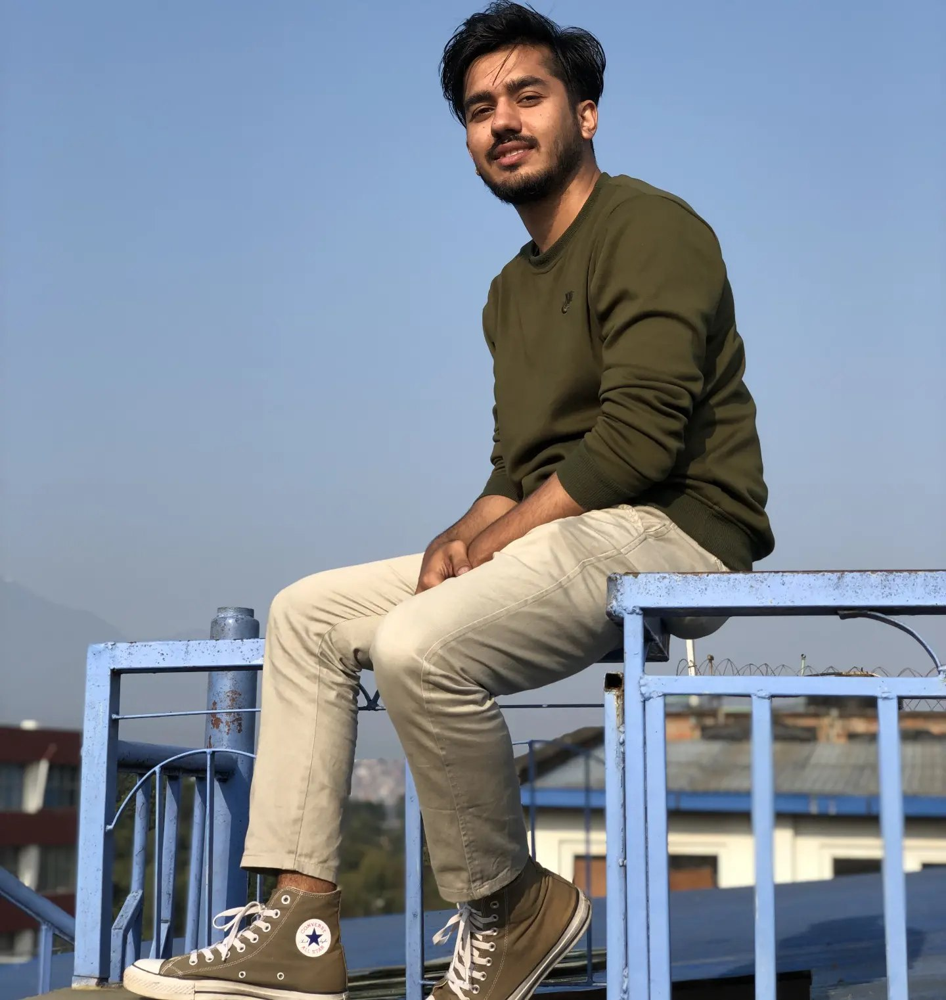

Rojan Neupane

Objective
To work in an environment of sharing knowledge and exchanging technology
Education
- Bachelors in Computer Information System(BCIS)(2018-2023)
- +2 Management, Global College (2015-2017)
- SLC (2014)
Work Experience
- Junior Assistant - WorldLink Communication
August 2021-Feb 2024
- Handled customer via chats
- FTTH Monitoring
- Level 2 Networking
Skills
- Communication Skills
- Networking Skills
- Web Development Skills
Awards and Certificate
- Web Development from Aptech
Others
Contact Me